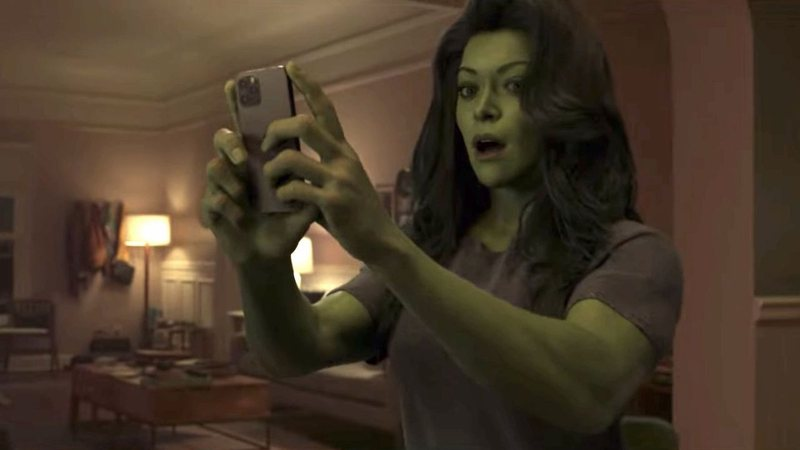
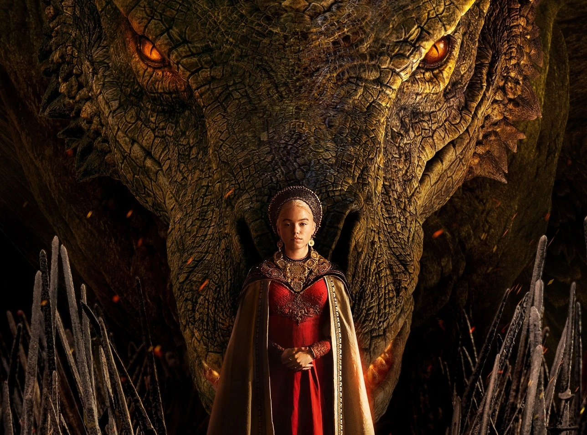

FILMES

She-Hulk: Attorney at Law é uma série de televisão estadunidense de super-herói de 2022 criada por Jessica Gao
para o Disney+, baseada na personagem Mulher-Hulk da Marvel Comics.
Primeiro episódio:
18 de agosto de 2022
Número de episódios:
9
Emissora original:
Disney+
Autores:
Jessica Gao, Jack Kirby, John Buscema
Gêneros:
Ação, Aventura, Comédia televisiva, História de super-herói,
Drama jurídico
Número de temporadas:
1
Opinião do Pedroo_ft:
Cara, sendo sincero... os ep 5,6,7 não faz o menor sentido. Mas os ultimos são muito bom. As participações especiais
são perfeitas. Não fica esperando um CGI de outro mundo e tu vai gostar.
Minha nota:
7,7

Os apoiadores de Aegon Targaryen entram em conflito com os adeptos de sua meia-irmã, Rhaenyra, pelo trono de
Viserys I, seu falecido pai, iniciando uma guerra civil cerca de 200 anos antes dos eventos retratados em "Game
of Thrones".
Primeiro episódio:
21 de agosto de 2022
Número de episódios:
10
Emissora original:
HBO MAX
Gêneros:
Sexo,muito sexo e muita teta e sem rola.
Drama jurídico
Número de temporadas:
1
Opinião do Pedroo_ft:
Sim, essa é melhor serie de 2022. Eu achei incrivel, a abertura. o final. Tu tem sorte de chegar no mesmo ano da
segunda temporada. Finalmente começou a dança dos dragões.
Minha nota:
10